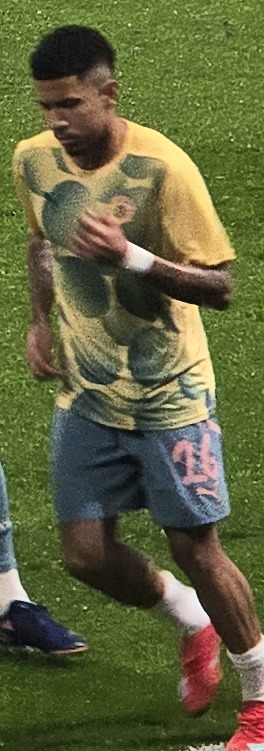
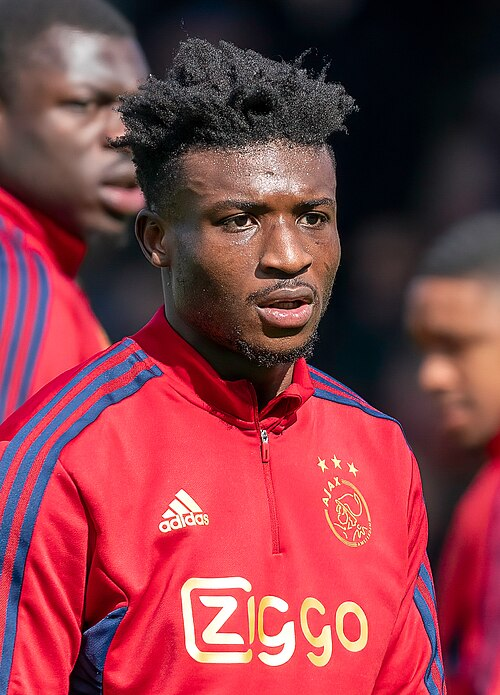
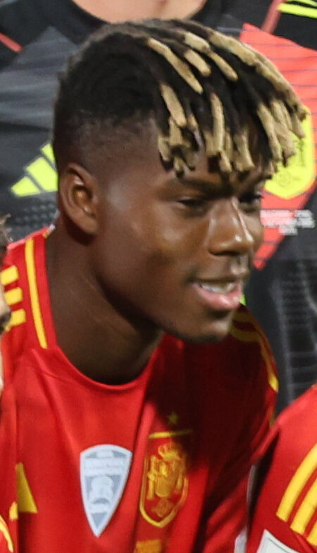
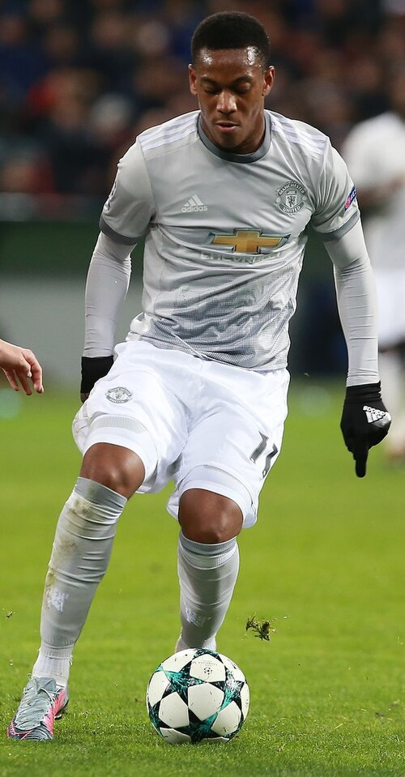

Transfer Movement Board
A market movement tape for loans, free agents, academy movement, contract signals, ARES impact, and Market impact.
| Date | Image | Player | Age | Position | From | To | Country | Continent | Type | ARES Impact | Market Impact | Confidence |
|---|---|---|---|---|---|---|---|---|---|---|---|---|
| 2026-05-02 |  |  Savinho | 22 | FW | Manchester City F.C. | Market fit review | England | Europe | Loan Watch | -0.6 | -1.9 | High |
| 2026-05-03 |  | Jean-Philippe Mateta | 28 | W | Crystal Palace F.C. | Market fit review | England | Europe | Permanent Signal | -1.1 | -3.3 | High |
| 2026-05-04 |  |  Mohammed Kudus | 25 | FW | Tottenham Hotspur F.C. | Market fit review | England | Europe | Free Agent Watch | -0.1 | -0.3 | High |
| 2026-05-05 |  | João Pedro | 24 | FW | Chelsea F.C. | Market fit review | England | Europe | Academy Promotion | -0.1 | -0.4 | High |
| 2026-05-06 |  |  Nico Williams | 23 | FW | Athletic Club | Market fit review | Spain | Europe | Contract Signal | -0.5 | -1.6 | High |
| 2026-05-07 |  | Mateo Retegui | 27 | FW | Al Qadsiah FC | Market fit review | Saudi Arabia | Asia | Loan Watch | +0.9 | +2.6 | High |
| 2026-05-08 |  | Franck Kessié | 29 | MF | Al Ahli FC | Market fit review | Saudi Arabia | Asia | Permanent Signal | -0.8 | -2.4 | High |
| 2026-05-09 |  | Cephas Malele | 32 | FW | Al-Tai FC | Market fit review | Saudi Arabia | Asia | Free Agent Watch | +0.7 | +2.1 | High |
| 2026-05-10 |  |  Sergej Milinković-Savić Sergej Milinković-Savić | 31 | MF | Al Hilal SFC | Market fit review | Saudi Arabia | Asia | Academy Promotion | -0.3 | -0.8 | High |
| 2026-05-11 |  |  Théo Hernandez Théo Hernandez | 28 | DF | Al Hilal SFC | Market fit review | Saudi Arabia | Asia | Contract Signal | +1.0 | +2.9 | High |
| 2026-05-12 | AB2MFNorth Africa | AB2MFNorth AfricaAmir Benyoussef 2 | 22 | MF | Cairo Atlas | Market fit review | Egypt | Africa | Loan Watch | +0.6 | +1.8 | Medium |
| 2026-05-13 | KM4FWWest Africa | KM4FWWest AfricaKofi Mensar 4 | 21 | FW | Accra Harbor | Market fit review | Ghana | Africa | Permanent Signal | +0.3 | +0.8 | Medium |
| 2026-05-14 | KM2FWWest Africa | KM2FWWest AfricaKofi Mensar 2 | 19 | FW | Accra Harbor | Market fit review | Ghana | Africa | Free Agent Watch | +0.3 | +0.8 | Medium |
| 2026-05-15 | IEFGKNorth Africa | IEFGKNorth AfricaIdris El Fassi 3 | 18 | GK | Rabat Union | Market fit review | Morocco | Africa | Academy Promotion | +1.6 | +4.8 | Medium |
| 2026-05-16 | NO2WWest Africa | NO2WWest AfricaNuru Okeke 2 | 28 | W | Lagos Mainland | Market fit review | Nigeria | Africa | Contract Signal | +1.3 | +3.8 | Medium |
| 2026-05-17 |  | Louis Munteanu | 23 | FW | D.C. United | Market fit review | USA / Canada | North America | Loan Watch | +0.2 | +0.5 | High |
| 2026-05-18 |  |  Anthony Martial | 30 | FW | Club de Fútbol Monterrey | Market fit review | Mexico | North America | Permanent Signal | -0.8 | -2.3 | High |
| 2026-05-19 |  | Alexandru Băluță | 32 | W | Los Angeles FC | Market fit review | USA / Canada | North America | Free Agent Watch | +0.5 | +1.5 | High |
| 2026-05-20 |  | Son Heung-min | 33 | FW | Los Angeles FC | Market fit review | USA / Canada | North America | Academy Promotion | +0.5 | +1.6 | High |
| 2026-05-21 |  |  Felipe Mora Felipe Mora | 32 | FW | Pumas UNAM | Market fit review | Mexico | North America | Contract Signal | +0.5 | +1.4 | High |
| 2026-05-22 |  | Vitor Roque | 21 | FW | Sociedade Esportiva Palmeiras | Market fit review | Brazil | South America | Loan Watch | -0.3 | -0.9 | High |
| 2026-05-23 |  | Philippe Coutinho | 33 | W | CR Vasco da Gama | Market fit review | Brazil | South America | Permanent Signal | +0.1 | +0.3 | High |
| 2026-05-01 |  | Samuel Lino | 26 | MF | Clube de Regatas do Flamengo | Market fit review | Brazil | South America | Free Agent Watch | +0.1 | +0.4 | High |
| 2026-05-02 |  | Leandro Paredes | 31 | MF | Boca Juniors | Market fit review | Argentina | South America | Academy Promotion | +1.4 | +4.3 | High |
| 2026-05-03 |  | André Carrillo | 34 | W | S.C. Corinthians Paulista | Market fit review | Brazil | South America | Contract Signal | +0.8 | +2.4 | High |
| 2026-05-04 | NK2FWOceania | NK2FWOceaniaNoah Kerrin 2 | 22 | FW | Melbourne Southern | Market fit review | Australia | Oceania | Loan Watch | +0.6 | +1.8 | Medium |
| 2026-05-05 | TR4MFOceania | TR4MFOceaniaTane Raukawa 4 | 21 | MF | Auckland Harbour | Market fit review | New Zealand | Oceania | Permanent Signal | +0.3 | +0.8 | Medium |
| 2026-05-06 | TR2MFOceania | TR2MFOceaniaTane Raukawa 2 | 19 | MF | Auckland Harbour | Market fit review | New Zealand | Oceania | Free Agent Watch | +0.3 | +0.8 | Medium |
| 2026-05-07 | AV3WOceania | AV3WOceaniaAri Vatu 3 | 18 | W | Sydney Southern | Market fit review | Australia | Oceania | Academy Promotion | +1.6 | +4.8 | Medium |
| 2026-05-08 | MW2GKOceania | MW2GKOceaniaMason Wylie 2 | 28 | GK | Wellington North | Market fit review | New Zealand | Oceania | Contract Signal | +1.3 | +3.8 | Medium |